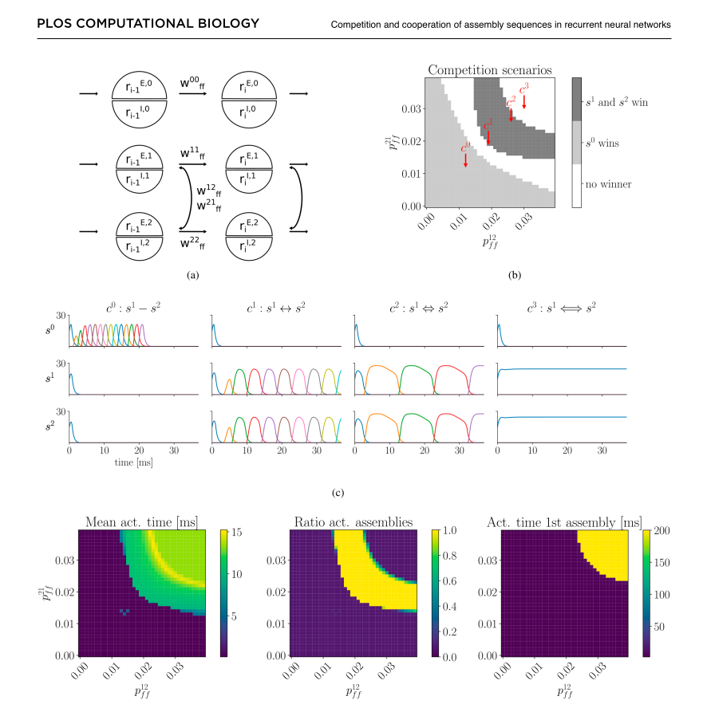
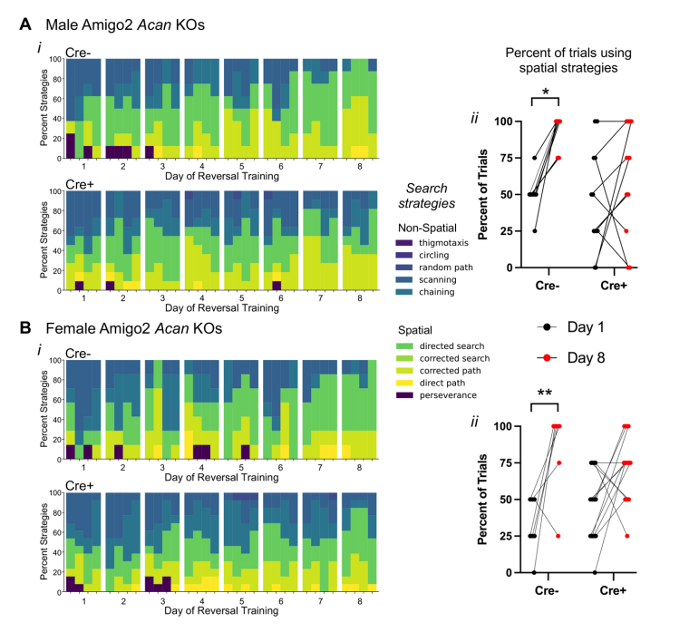
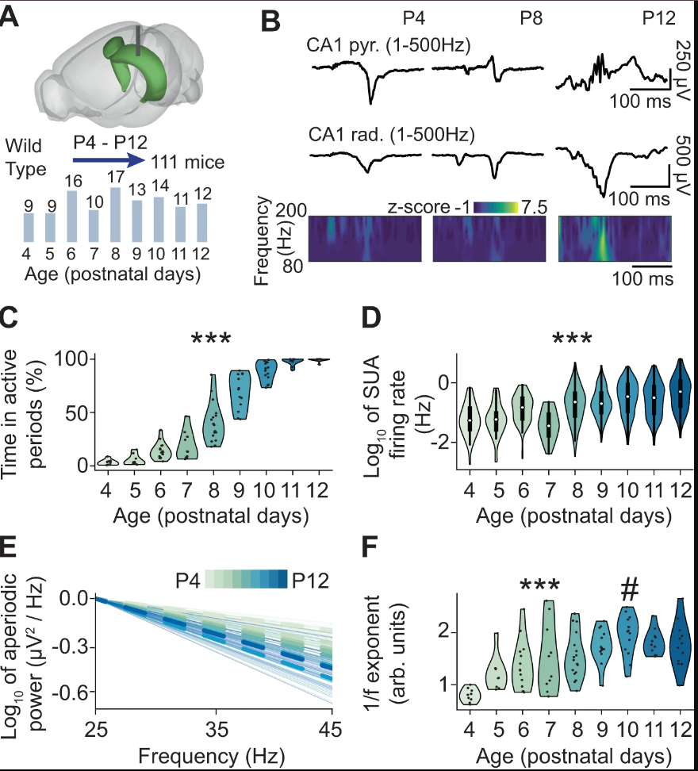
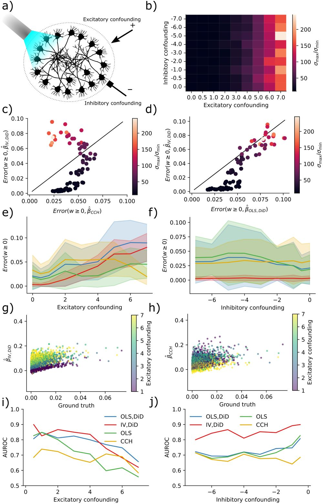
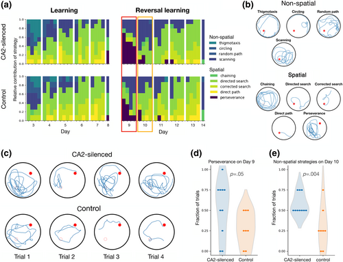
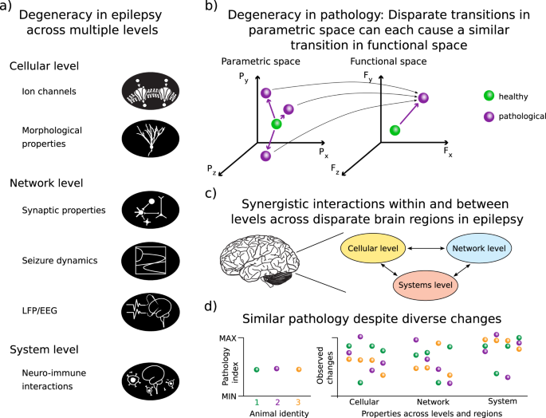
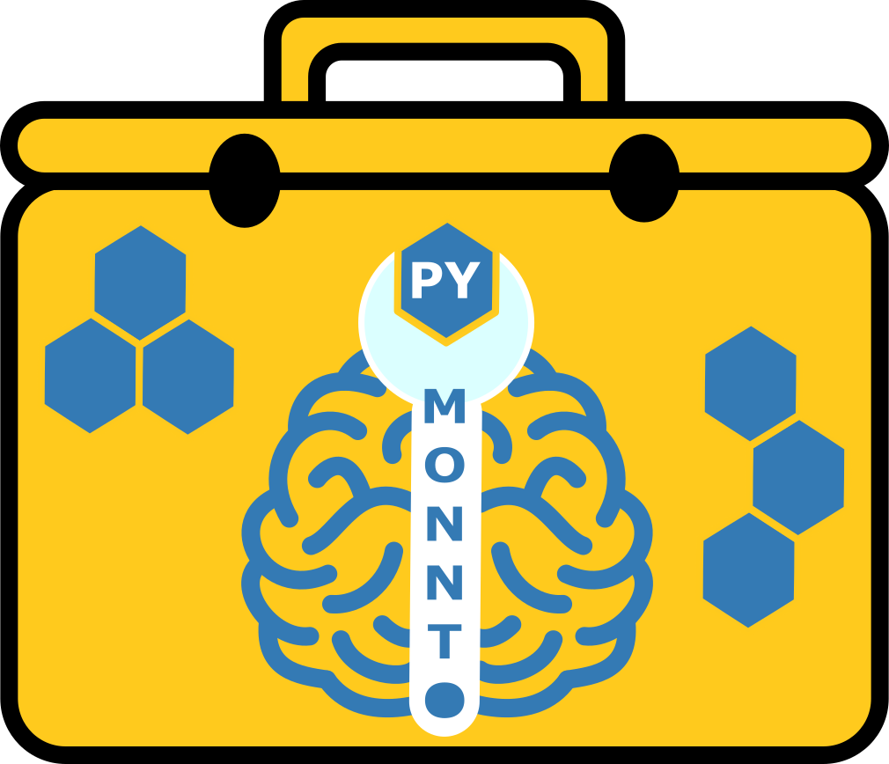
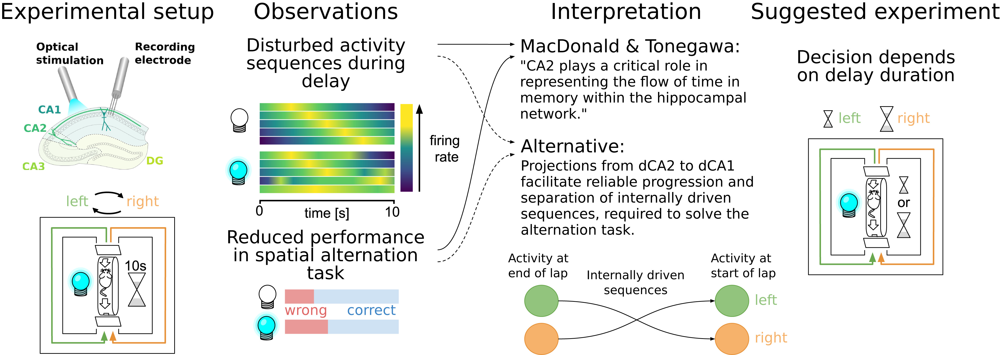
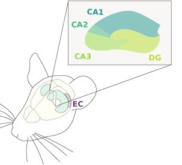

Hey, my name is Tristan and I am a Computational Neuroscientist.
Currently, I am employed as a CIDAS Fellow at CIDAS - Campus-Institut Data Sciene, Göttingen University, and as a research fellow at the Department of Neurology, University Hospital Frankfurt, Germany.


Research
My research agenda revolves around deciphering how the brain builds and uses its internal model of the world, also called cognitive map. This topic fascinates me for two reasons: First, it is an exciting, yet unresolved, neuroscientific question. Second, reengineering cognitive map formation in artificial neural networks could lead to intelligent systems that surpass current technology in reliability, speed, and efficiency in terms of data requirements and energy consumption. To this aim, my students and I build artificial neural networks to explain experimental data and to solve real world challenges. We focus primarily on the hippocampus because of its crucial role for cognitive map formation. In addition, I recently started working on neuromorphic hardware and I use my theoretical and physiological knowledge to support research on epilepsy.
Biography
As a Think@Ruhr Research Fellow from 2022-2025, I worked as an independent postdoc under the mentorship of Prof. Sen Cheng at Ruhr University Bochum, focusing on topics around hippocampal theory and information processing in recurrent neural networks. Between 2020 and 2022, I worked as a postdoc in the lab of Jochen Triesch at the Frankfurt Institute for Advanced Studies on questions related to synaptic lifetime, criticality, and epileptogenesis. In 2021, I earned my Doctor of Philosophy from the University of Oslo as part of the Simula-UiO-UCSD Research and PhD training program . Supervised by Arvind Kumar, Marianne Fyhn, and Jill Leutgeb, my PhD research led to the development of a theory for the computational role of the hippocampal region CA2. Prior to this, I obtained a Master's degree at the University of Freiburg, studying Computational Neuroscience at the Bernstein Center Freiburg.
Highlighted Publications
For more publications, visit Google Scholar.
-

Competition and cooperation of assembly sequences in recurrent neural networks
PLOS Computational Biology 2025
-

Perineuronal Nets on CA2 Pyramidal Cells and Parvalbumin-Expressing Cells Differentially Regulate Hippocampal-Dependent Memory
The Journal of Neuroscience 2025
-

A developmental increase of inhibition promotes the emergence of hippocampal ripples
Nature Communications 2024
-

Inferring causal connectivity from pairwise recordings and optogenetics
PLOS Computational Biology 2023
-

Silencing hippocampal CA2 reduces behavioral flexibility in spatial learning
Hippocampus 2023
-

Degeneracy in epilepsy: multiple routes to hyperexcitable brain circuits and their repair
Communications Biology 2023
-

PymoNNto: A Flexible Modular Toolbox for Designing Brain-Inspired Neural Networks
Frontiers in Neuroinformatics 2021
-

Differential involvement of CA2 in internally vs. externally driven hippocampal sequences
Proceedings of the National Academy of Sciences 2021
-

CA2 beyond social memory: Evidence for a fundamental role in hippocampal information processing
Neuroscience & Biobehavioral Reviews 2021
-

Selective neuromodulation and mutual inhibition within the CA3–CA2 system can prioritize sequences for replay
Hippocampus 2020
Join us!
Are you passionate about Neuroscience and Artificial Intelligence, and do you possess strong quantitative skills? Are you seeking an engaging internship, or a bachelor's, master's, or Ph.D. thesis topic that can truly challenge you? If so, we would love to hear from you! For more information please contact us.
Alumni
-
Andrea Graziano
-
Jan Bellingrath
-
Fatemeh Jamshidian
-
Armin Toghi